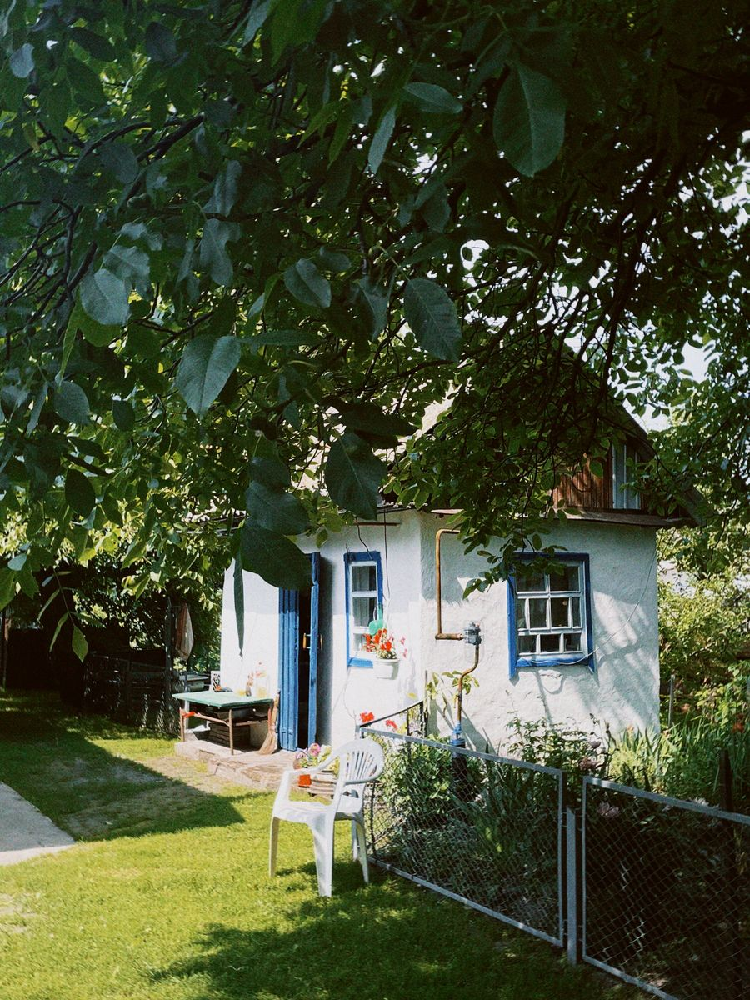

你不知道的德国 · 33
🌻 德国人的
小花园情结
Schrebergarten · 全德约 90 万座 · 有法有规还有等待名单
📜 从医生的倡议开始
19 世纪工业化时期，德国城市工人住在拥挤的出租屋里，孩子们没有地方玩。莱比锡的医生 Daniel Gottlob Moritz Schreber 提倡给孩子留出活动空间，1864 年莱比锡出现了第一座这样的园地。
后来这类园地就以他的名字命名——Schrebergarten，中文常译作「市民农园」或「小花园」。
🌱 最初的目的是健康与教育，不是种菜。让孩子有土、有阳光、有事做——这个初衷一百多年后还在，今天的德国小学仍常带学生去小花园上自然课。
🇩🇪 Auf Deutsch
Der Name geht auf den Leipziger Arzt Moritz Schreber zurück. 1864 entstand in Leipzig der erste Schrebergarten – als Ort für Kinder und Familien.
🏡 到底长什么样
一块地通常 200–400 平方米：一片菜地、一片草地、几棵果树，再加一座小木屋（Gartenhaus）。
木屋不能当住宅用——不能住人、不能上户口，只能放工具、桌椅、偶尔小憩。这一点是法律明文规定的。
🚂 很多小花园挨着铁路、公路或城市边缘——因为那些地皮不值钱、不能盖楼。最「没用」的地，反而被用成了最有人情味的绿地。
🇩🇪 Auf Deutsch
Ein Schrebergarten ist meist 200 bis 400 Quadratmeter groß, mit Beeten, Rasen und einem Gartenhaus – Wohnen ist darin nicht erlaubt.
📋 种什么，法律说了算
各州有《市民农园法》（Kleingartengesetz），核心是比例要求：一般约三分之一种蔬菜水果，三分之一种花卉，三分之一留作草地和休闲。
此外还有一堆细节：篱笆高度、木屋面积、能不能搭棚子、能不能养鸡——都写在协会章程里，由协会（Verein）统一管。
📏 有些地方甚至规定草坪不许太「精致」——因为石板、假草皮会破坏土壤和生态。德国式规矩在小花园里体现得淋漓尽致。
🇩🇪 Auf Deutsch
Die Kleingartengesetze der Länder schreiben vor, wie viel Fläche für Gemüse, Blumen und Rasen genutzt werden soll. Auch Zäune und Gartenhäuser sind geregelt.
⏳ 要排队，还要干义务劳动
在很多城市，小花园一位难求，等待名单动辄几年。想租一块地的家庭，往往要先给协会写信登记，然后慢慢等。
租到手也不轻松：入会费、年租金、义务劳动（Arbeitseinsatz）一项不少。协会还会组织节日、评比「最美花园」。
🤝 德国有专门的组织——Bundesverband Deutscher Gartenfreunde（联邦德国园艺之友协会）。种菜这件事，德国人是有全国性组织、有干部、有章程的。
🇩🇪 Auf Deutsch
In vielen Städten gibt es Wartelisten über Jahre. Wer einen Garten bekommt, tritt meist einem Verein bei und leistet Arbeitseinsätze.
🐝 城市里的生态岛
小花园连成一片，就是城市的绿肺：蜂箱、堆肥、老果树、水桶——生物多样性比公园高得多，因为这里的植物是有人精心照料的。
在气候变化的讨论里，小花园也越来越被重视：它降温、蓄水、给昆虫提供食物。
🍅 很多德国家庭夏天的西红柿、黄瓜、李子根本吃不完，会放在篱笆外的小木箱（Gabentisch）里，写上「免费自取」。这是小花园区特有的邻里默契。
🇩🇪 Auf Deutsch
Schrebergärten sind ökologische Inseln in der Stadt: Bienenstöcke, Kompost, alte Obstbäume. Viele verschenken überschüssiges Gemüse am Zaun.
🇩🇪 为什么这么抢手
租金便宜（一年常常只要几百欧）、有土可种、孩子能撒野、狗能跑——对住公寓的德国家庭来说，这是能用小钱买到的「一小块自己的土地」。
还有一层心理：德国人对自然和「自己动手」（Selbermachen）有长期的浪漫。种出来的菜未必比超市便宜，但那不是重点。
🌻 夏天傍晚，小花园区里到处是烤肉味、割草机声和打招呼声。有人开玩笑说：德国人的社交生活，一半发生在小花园的篱笆边。
🇩🇪 Auf Deutsch
Für viele Familien sind Schrebergärten ein kleines Stück eigenes Land – günstig, grün und mit der Erlaubnis, selbst zu machen.
📖 想读更多德国冷知识？
33 期「你不知道的德国」深度专栏，都在 Leon 德语学习中心。
📚 进入网站